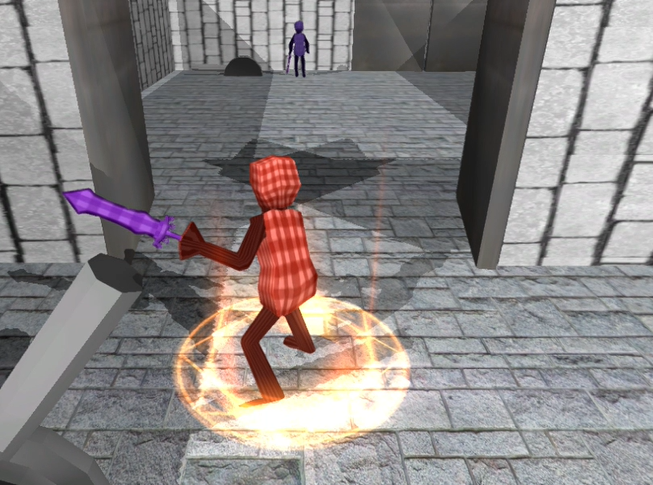
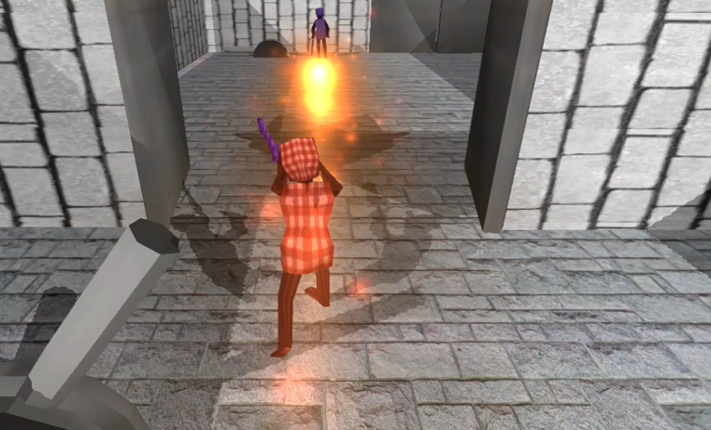
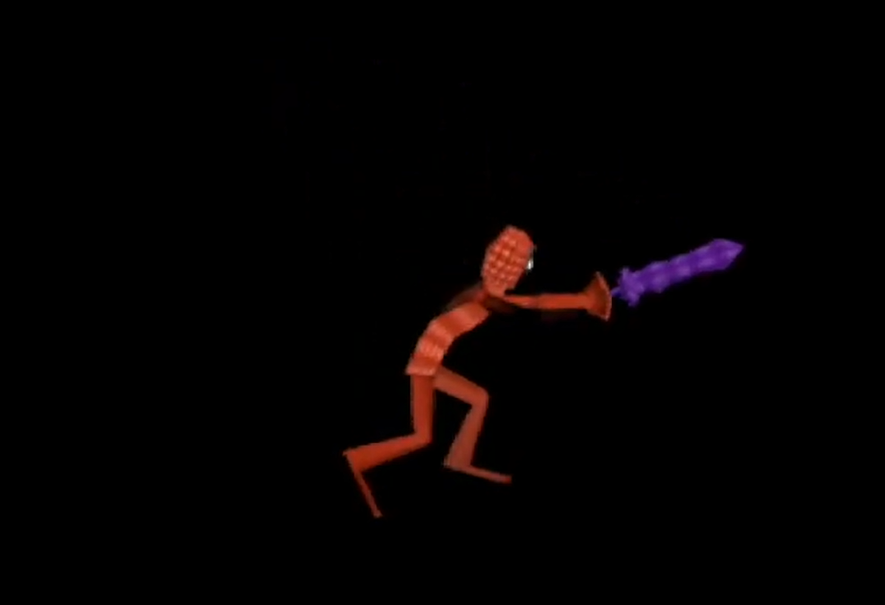
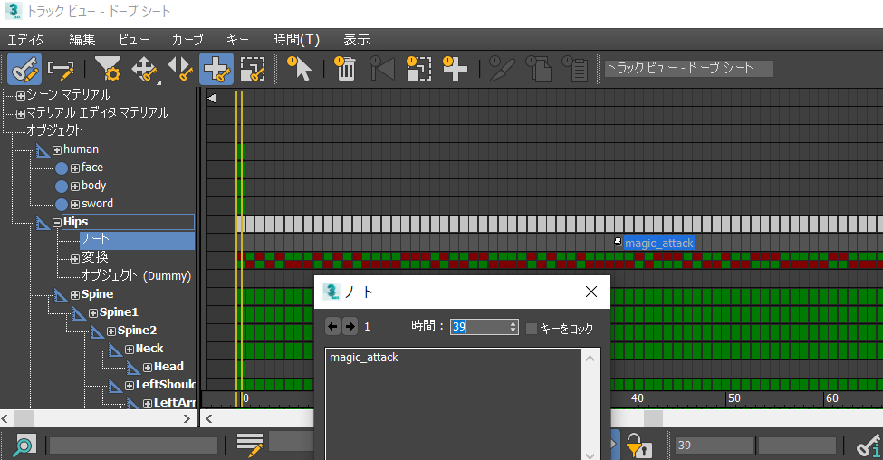
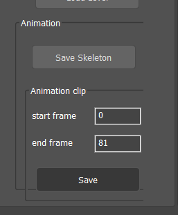
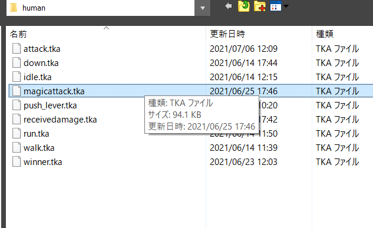

7.1 アニメーションキー
ここまで、プレイヤーの通常攻撃を実装してきました。
次は、プレイヤーの魔法攻撃を実装していきましょう。このプレイヤーの魔法攻撃は、火の玉を飛ばすというものです。


ゲームパッドのXボタンで魔法攻撃です。ですが、まだアニメーションが再生されるだけです。
通常攻撃の実装で学んだ、アニメーションイベント、エフェクトなどを使用して、魔法攻撃を実装していきましょう。
まず、アニメーションイベントを使用して、火の玉が生成させる時間を調整したいと思います。
プレイヤーの魔法攻撃のアニメーションは以下のようになっています。
このアニメーションの内、プレイヤーが手を前に突き出すタイミングで火の玉を生成したいと思います。

では、3ds Maxでアニメーションキーを設定していきましょう。
3ds Maxを立ち上げて、Assets/modelData/humanのhuman_attack.fbxを読み込んでください。
では、Actiion_03を参考にして、39フレーム目に「magic_attack」というキーを設定してください。

出来たら、Assets/animData/humanのmagicattack.tkaに保存してください。


7.2 アニメーションイベント
では、先ほど設定したアニメーションキーを使用して、火の玉を生成するようにしてみましょう。
Visual Studioを開いて、Player.cppのMakeFireBall関数とOnAnimationEvent関数に下記のコードを追加してください。
Player.cpp
.
.
.
void Player::MakeFireBall()
{
//ファイヤーボールを作成する。
FireBall* fireBall = NewGO<FireBall>(0);
Vector3 fireBallPosition = m_position;
//座標を少し上にする。
fireBallPosition.y += 70.0f;
//座標を設定する。
fireBall->SetPosition(fireBallPosition);
fireBall->SetRotation(m_rotation);
//術者はプレイヤーにする。
fireBall->SetEnMagician(FireBall::enMagician_Player);
}
.
.
.
void Player::OnAnimationEvent(const wchar_t* clipName, const wchar_t* eventName)
{
//キーの名前が「attack_start」の時。
if (wcscmp(eventName, L"attack_start") == 0) {
//攻撃中にする。
m_isUnderAttack = true;
//エフェクトを発生させる。
MakeSlashingEffect();
}
//キーの名前が「attack_end」の時。
else if (wcscmp(eventName, L"attack_end") == 0) {
//攻撃を終わる。
m_isUnderAttack = false;
}
//キーの名前が「magic_attack」の時。
else if (wcscmp(eventName, L"magic_attack") == 0) {
//ファイヤーボールを作成する。
MakeFireBall();
}
}
7.3 当たり判定
では、まず「FireBall」クラスにCollisionObjectを追加しましょう。 FireBall.hに下記のコードを追加してください。
FireBall.h
#pragma once
//クラス宣言。
class CollisionObject;
///<summary>
///ファイヤーボール。
///<summary>
class FireBall : public IGameObject
{
public:
.
.
.
EnMagician m_enMagician = enMagician_None; //術者。
float m_timer = 0.0; //タイマー。
CollisionObject* m_collisionObject = nullptr; //CollisionObject。
}
次に、FireBall.cppに下記のコードを追加してください。
FireBall.cpp
#include "stdafx.h"
#include "FireBall.h"
#include "sound/SoundEngine.h"
#include "sound/SoundSource.h"
//CollisionObjectを使用したいので、ファイルをインクルードする。
#include "collision/CollisionObject.h"
FireBall::FireBall()
{
}
FireBall::~FireBall()
{
//コリジョンオブジェクトを削除する。
DeleteGO(m_collisionObject);
}
bool FireBall::Start()
{
.
.
.
//効果音を再生する。
SoundSource* se = NewGO<SoundSource>(0);
se->Init(1);
se->Play(false);
se->SetVolume(1.5f);
//コリジョンオブジェクトを作成する。
m_collisionObject = NewGO<CollisionObject>(0);
//球状のコリジョンを作成する。
m_collisionObject->CreateSphere(
m_position, //座標。
Quaternion::Identity, //回転。
35.0f //半径。
);
//術者がプレイヤーだったら。
if (m_enMagician == enMagician_Player)
{
//名前をplayer_fireballにする。
m_collisionObject->SetName("player_fireball");
}
//術者がエネミーだったら。
else if (m_enMagician == enMagician_Enemy)
{
//名前をenemy_fireballにする。
m_collisionObject->SetName("enemy_fireball");
}
//コリジョンオブジェクトが自動で削除されないようにする。
m_collisionObject->SetIsEnableAutoDelete(false);
return true;
}
FireBall.cpp
void FireBall::Update()
{
//座標を設定する。
m_position += m_moveSpeed * g_gameTime->GetFrameDeltaTime();
//コリジョンオブジェクトに座標を設定する。
m_collisionObject->SetPosition(m_position);
.
.
.
}